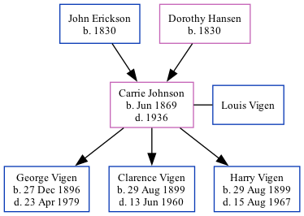

Carrie Vigen (née Johnson) 1869 - 1936
[ Home ] | [ Surnames Index ] | [ Family History ]The child of John Erickson and Dorothy Hansen, , Carrie was the great-great-grandmother of Stephanie Hardesty (née Teten), was born in Gran, Oppland, Norway in Jun 18691,2,3,4,5,6,7 and married Louis Vigen (with whom she had 3 children: George Leonard Dilley, Clarence Dewey and Harry Arthur) in 18951.
During her life, she was living in Sioux City, Woodbury, Iowa in 19001; in Sioux Ward 3, Woodbury, Iowa in 19102; in Sioux City, Iowa, USA in 19188; in Sioux City Precinct 8, Woodbury, Iowa in 19203; in Woodbury on Jan 1, 19256; and in Sioux City in 19304. On May 2, 1892 (age: 20 Years.) she arrived in Philadelphia, Pennsylvania (age: 20 Years.).She traveled from Liverpool, England.
She died in 1936 in F; Ridgelawn; 146; 3, Iowa5 (cemetery: Graceland).
Parents
- John was born in 1830
- Dorothy was born in 1830
Children
- George Leonard Dilley was born on Dec 27, 1896
- Clarence Dewey was born on Aug 29, 1899
- Harry Arthur was born on Aug 29, 1899
Citations
- 1900 United States Federal Census Ancestry.com Operations Inc (Age: 30; Marital Status: Married; Relation to Head of House: Wife)
- 1910 United States Federal Census Ancestry.com Operations Inc (Age in 1910: 40; Marital Status: Married; Relation to Head of House: Wife)
- 1920 United States Federal Census Ancestry.com Operations Inc (Age: 50; Marital Status: Married; Relation to Head of House: Wife)
- 1930 United States Federal Census Ancestry.com Operations Inc (Age: 60; Marital Status: Married; Relation to Head of House: Wife)
- Iowa Cemetery Records Ancestry.com Operations Inc
- Iowa, State Census Collection, 1836-1925 Ancestry.com Operations Inc (Marital Status: Married; Relation to Head: Wife)
- Philadelphia Passenger Lists, 1800-1945 Ancestry.com Operations Inc
- U.S. City Directories, 1821-1989 (Beta) Ancestry.com Operations, Inc.
Family Tree
Data (GEDCOM) maintained by Jay Weston Hannah, Omaha, Nebraska, USA.
Website generated by ged2site. Last updated on Jun 18, 2024.